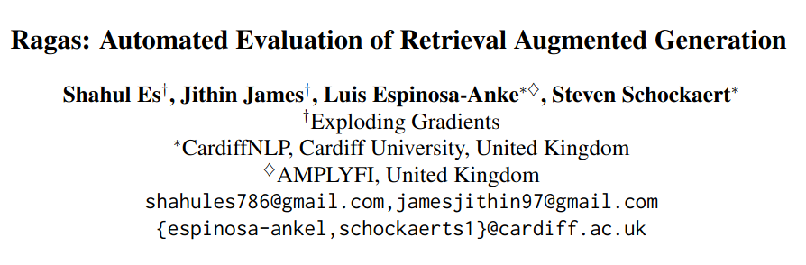
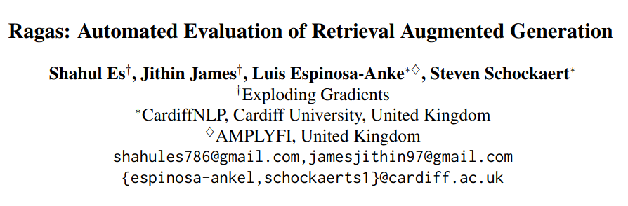

Article

Submitted on 26 Sep 2023 (v1), last revised 28 Apr 2025 (this version, v2) on arXiv.
2025-11-03
General limitations:
Specific problems:
Key point: Retrieval Augmentated Generation is an architecture for AI-integrated systems. It relies on an external knowledge base to improve on the overall quality of a generative LLM’s output.
a foundational architecture in modern LLM systems” —(Shankar and Husain 2025)


Original paper by Lewis et al. (2021)
Authors from:
NB: Before the launch of ChatGPT (GPT-3.5 in nov. 2022). They use BART and GPT-2.
Key elements :
seq2seq (early Transformers architecture).Comments:
Higher level problems:
Internal problems:

General recommendations for evaluation:
| pros | cons |
|---|---|
| control of output from expected user behaviour | user query might not fit expected queries ( e.g. edge cases and jailbreak attempts) |
| fixed dataset means that different prompting strategies can be assessed over time | annotation is time consuming |

Submitted on 26 Sep 2023 (v1), last revised 28 Apr 2025 (this version, v2) on arXiv.
Key element: Reference-free (not tied to having ground truth available) evaluation framework for retrieval agumented generation
Essentially: a series of prompts to decompose the evaluation for specific aspects of the RAG (faithfulness, answer relevance, context relevance).
Integration: llama-index and Langchain.
Available: https://github.com/explodinggradients/ragas
Ratings: 11.1k stars on GitHub
RAGAS suggests an evaluation at the final step (D)
Answer Relevance: The generated answer should address the actual question.
Context Relevance: Retrieved context should be focused, containing as little irrelevant information as possible.
The answer should be grounded in provided context
Example: You have designed a RAG system to help you with your courses notes. You want to make sure that the IA-system answers based on the content of the course as it is very advanced knowledge and not from unreliable sources (the web).
Strategy:
Prompt:
Given a question and answer, create one or more statements from each sentence in the given answer. \n question: [question] answer: [answer]
Question = query = “Can you summarize last week’s course?”
Answer = output =
“Here’s a concise summary of your Week 8 – AI Agent Architecture course content:
Agents are autonomous systems that:
Statements created for evaluation =
“The course discussed in Week 8 is titled”AI Agent Architecture.”
“The week focused on the structure, interaction, and evolution of AI agents.”
“Agents are autonomous systems.”
“Agents interact with users, other agents, and their environment.”
Prompt:
Consider the given context and following statements, then determine whether they are supported by the information present in the context. Provide a brief explanation for each statement before arriving at the verdict (Yes/No). Provide a final verdict for each statement in order at the end in the given format. Do not deviate from the specified format. statement: [statement 1] ... statement: [statement n]
Context: course.md week1, week8, week n, syllabus.xslx chunk 1, chunk n.
Statement to assess : “The course discussed in Week 8 is titled”AI Agent Architecture.”
Evaluation output : “Chunk 1 of the Syllabus provided does mention that the topic of Week 8 is AI Agent Architecture. Verdict : Yes”
Metric : supported statements/total number of statements
The generated answer should address the actual question.
Strategy: Retro-engineering what the question could have been from the answer.
Generate a question for the given answer. answer: [answer]
From the output summary:
Possible Question: “What are the key concepts, models, and research papers covered in Week 8 – AI Agent Architecture, and how do they illustrate the evolution from single LLM-based systems to multi-agent ecosystems?”
To be compared with the actual query: “Can you summarize last week’s course?”
Metric : Cosine similarity between the actual question and the generated answer.
Retrieved context should be focused, containing as little irrelevant information as possible.
Strategy: Extracting sentences from the context that have could have been used to give the answer.
Prompt:
Please extract relevant sentences from the provided context that can potentially help answer the following question. If no relevant sentences are found, or if you believe the question cannot be answered from the given context, return the phrase "Insufficient Information". While extracting candidate sentences you’re not allowed to make any changes to sentences from given context.
Helps analyse the granularity of the chunks provided and noise in the top-k (tells you whether there is anything relevant or not in the context).
Metric : number of extracted sentences/total number of sentences
WikiEval Dataset : created for the purpose of RAGAS.
Question/Answers created from 50 wiki pages (after 2022 to avoid reliance on implicit knowledge).
Prompt:
Your task is to formulate a question from given context satisfying the rules given below: 1. The question should be fully answered from the given context. 2. The question should be framed from a part that contains non-trivial information. 3. The answer should not contain any links. 4. The question should be of moderate difficulty. 5. The question must be reasonable and must be understood and responded to by humans. 6. Do not use phrases that ’provided context’, etc in the question context:
Prompt:
Answer the question using the information from the given context. question: [question] context: [context]
Their evaluation relies on the agreement of the method with a human annotator based on pairwise comparisons != absolute scores.
| question | answer A | answer B | context |
|---|---|---|---|
| When is the scheduled launch date and time for the PSLV-C56 mission, and where will it be launched from? | The PSLV-C56 mission is scheduled to be launched on Sunday, 30 July 2023 at 06:30 IST / 01:00 UTC. It will be launched from the Satish Dhawan Space Centre, Sriharikota, Andhra Pradesh, India. | The scheduled launch date and time for the PSLV-C56 mission have not been provided.The PSLV-C56 mission is an important space mission for India. It aims to launch a satellite into orbit to study weather patterns.’ | “The PSLV-C56 is the 58th mission of Indian Space Research Organisation’s Polar Satellite Launch Vehicle (PSLV) and the 17th flight of the PSLV-CA variant, and will be get launched from Satish Dhawan Space Centre First Launch Pad ( FLP ).is Scheduled to get launched on Sunday, 30 July 2023 at 06:30 IST / 01:00 UTC from Satish Dhawan Space Centre, Sriharikota, Andhra Pradesh, India. This is a dedicated commercial mission through NSIL with DS-SAR as primary satellite and VELOX-AM as a co-passenger satellite With other 5 Satellites, All satellites from this mission belongs to Singapore.” |
Ragas is compared to :
GPT Score Prompt:
Faithfulness measures the information consistency of the answer against the given context. Any claims that are made in the answer that cannot be deduced from context should be penalized. Given an answer and context, assign a score for faithfulness in the range 0-10. context: [context] answer: [answer]
GPT Ranking Prompt:
Answer Relevancy measures the degree to which a response directly addresses and is appropriate for a given question. It penalizes the present of redundant information or incomplete answers given a question. Given an question and answer, rank each answer based on Answer Relevancy. question: [question] answer 1: [answer 1] answer 2: [answer 2]

« The results in Table 1 show that our proposed metrics are much closer aligned with the human judgements than the predictions from the two baselines.
For faithfulness, the Ragas prediction are in general highly accurate.
For answer relevance, the agreement is lower, but this is largely due to the fact that the differences between the two candidate answers are often very subtle.
We found context relevance to be the hardest quality dimension to evaluate. In particular, we observed that ChatGPT often struggles with the task of selecting the sentences from the context that are crucial, especially for longer contexts. » (Es et al., 2025, p. 5) (pdf)
Reference-based score:
-> Comparison between vector of output and “golden standard” answer.
Reference-less score:
Saad-Falcon et al. (2024) (a year after RAGAS).
Synthetic data generation (generating query‑passage‑answer triples) + fine‑tuned “judge” models + a small human annotated set + Prediction‑Powered Inference (PPI) to give confidence intervals, better ranking of RAG systems.
Comment: much more complex to set-up, but better for robust eval (confidence intervals)
Strengths:
Limits:
Evaluation of the evaluation method:
RAGAS as evaluation: - Splitting the answer into statements (faithfulness score) adds another layer of interpretation by the LLM, increasing chances of hallucinations etc. - Lack of certainty assessment.